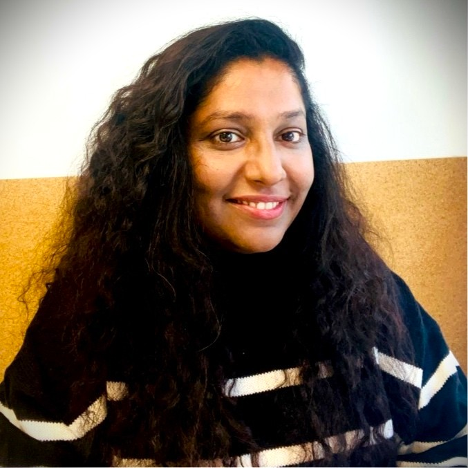

PhD & science communicator with global experience across academia, industry, and international research organisations. Helping researchers and organisations communicate, secure fund, and amplify their science.
From India's top universities to the corridors of international institutions - a professional path built at the intersection of science, strategy, and communication.

I hold a PhD in Biotechnology, with a strong educational and professional foundation in diverce sectors informs everything I do today. My scientific training gave me the ability to understand complex research deeply and my career since then has been about translating the scientifc depth into impact.
After my PhD, I joined the International Relations Office at IIT Bombay as a Project Manager, where I built bridges between Indian academia and global institutes and consortium partners, coordinating and organising prohrams under the funded scheme, managing stakeholder relationships, and learning the mechanics of international scientific collaboration first-hand.
My path then led me to Spain, where I joined a SaaS company driving their business expansion into Asian markets, an experience that sharpened my understanding of cross-cultural communication and commercial strategy. Most recently, I worked at Frontiers, a well known publishing company, in the Partnership department, deepening my expertise in scholarly communication and open-access ecosystems.
I have engaged with stakeholders from across the globe, spanning public research institutions, private enterprise, funding bodies, and organisations in both India and Europe. This unique cross-sector, cross-border perspective is the foundation of my consultancy.
From securing funding to amplifying your research in the public sphere, end-to-end science communication support tailored to your goals.
Specialised assistance in crafting compelling grant proposals to secure funding for scientific research projects. I help you present your ideas effectively to attract the right stakeholders and funding bodies in both Europe and India.
Guidance and support in writing, structuring, and submitting scientific publications and scholarly reports. Enhancing the clarity, accessibility, and impact of your research for maximum academic reach.
Developing high-quality scientific communication content for outreach through social media and web channels. Tailored to your target audience, delivering complex ideas in a clear, engaging, and accessible manner.
Very few science communicators bring both deep scientific training and hands-on commercial, academic, and international experience to the table.
A PhD in Biotechnology and a career rooted in science and technology means I understand your research at a fundamental level not just its surface.
Having worked with stakeholders across Asia, Europe, and USA, I understand how to tailor messaging for different cultural and institutional contexts.
My career spans academia, SaaS, and scientific publishing, giving me a 360° view of how science moves from lab to market to policy.
Specialist knowledge of both European (Horizon, ERC) and Indian (DST, DBT, CSIR) funding ecosystems, helping you navigate and succeed in both.
Insights on grant writing, science communication, publishing trends, and the art of making research matter beyond academia.
Whether you have a project in mind, a grant deadline approaching, or just want to explore how we might collaborate, I'd love to hear from you.